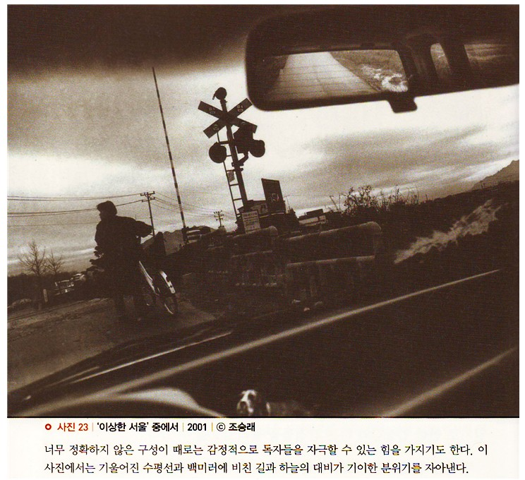

지식이나 언어능력 자체가 위대한 작가나 시인을 만들지 못하듯, 게슈탈트 이론을 꿰뚫고 있다고 해서 좋은 사진가나 디자이너가 될 수 있는 것은 아니다. 사진의 역사를 통해서 세상에 소개된 위대한 사진들 또한 단순한 지식과 좋은 장비가 전부가 아니라는 사실을 잘 입증해 주고 있다.
지식이 많다고 해서 더 좋은 사진을 촬영할 수 있는 것도 결코 아니다. 중요한 것은 자신이 가지고 있는 지식을 능숙하게 응용할 수 있는 능력이다. 좋은 사진은 지식과 응용력, 그리고 창의력을 바탕으로 만들어진다. 세상만사가 다 그렇듯이 사진 또한 아는 것과 행하는 것이 반드시 병행되어야 한다.
말로만 하는 사진가는 수십 년 동안 사진을 해도 늘 똑 같은 결과물만 찍어낸다. 그러므로 원칙과 실습이 함께해야 한다.
수단이 목적이 될 수 없듯이 게슈탈트 이론은 최종 목적지로 가기 위한 도구에 불과하다. 하지만 이 도구를 통해 우리는 사진 작업의 효율성을 극대화할 수 있다.
게슈탈트 이론은 시각정보를 어떻게 효과적으로 모으고 그룹핑해서 전달할 것인지에 대한 원칙들이다. 서두에 말한 것처럼 사진은 커뮤니케이션 수단의 하나다. 따라서 효과적인 메시지 전달을 극대화하기 위해서 게슈탈트 이론을 습득하는 것은 매우 중요하다.
그러나 더 중요한 것은 게슈탈트 이론이 좋은 사진으로 나아가는 유일한 길은 아니라는 것이다. 잘 알려진 현대 사진가들의 작품가운데는 게슈탈트 이론에 입각한 체계적인 구성력이 없는 것도 상당수다.
이러한 사진들은 구성력은 떨어져도 우리 마음에 강하게 다가오고, 무의식 안에 잠재되어 있는 많은 것을 불러내기도 한다. 하지만 규칙을 깨기 위해서는 규칙을 잘 알고 있어야 한다.
인간의 인지구조에 상응하는 시각물은 보는 사람으로 하여금 안정감을 부여하지만, 이와 반대되는 그래픽적 요소들은 불일치로 인한 긴장감과 다른 감정들을 불러일으킬 수 있다.
편안함과 불편함, 조화와 불일치는 양극에 존재함에도 불구하고 보는 이들을 사진 속으로 이끌 수 있다는 공통점이 있다. 지나친 모순 같지만, 극단은 때로 통한다.
[참고문헌]
[1]인지심리학과 그 응용,‘존 로버트 앤더슨’지음, 이영애 옮김, 이화대출판부, 2013. 1.18.
[2]원하는 사진을 어떻게 찍는가, 김성민, 소울메이트, 2015. 2. 9,
....
....
....
....
....